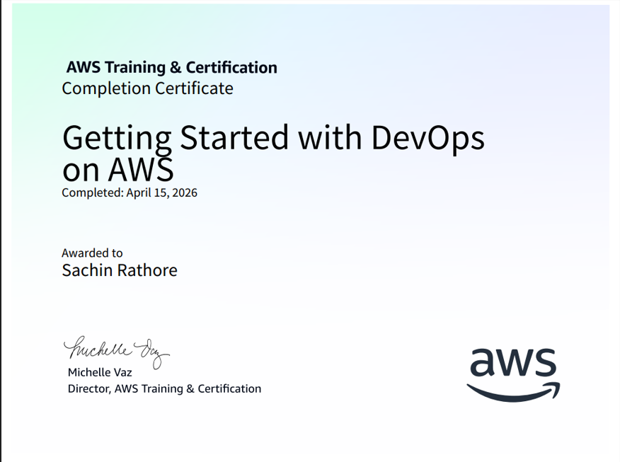

Certifications

Getting Started with DevOps on AWS
Issuer Name: AWS • Year:2026

Introduction to DevOps
Issuer Name: Microsoft • Year: 2026

Introduction to AWS Auto Scaling
Issuer Name:AWS • Year:2026
I am a student at the CPC Department, Gujarat University, focused on practical software engineering and modern development workflows.
I am an IMSc. IT student with specialization in Cloud & App Development (starting year 2024), and currently a learner in CI/CD with AWS and Azure.
I enjoy building full-stack projects, improving deployment pipelines, and creating user-friendly web applications.
IMSc. IT Specialization in Cloud & App Development, starting in 2024
HTML, CSS, JavaScript, React.js, Django, and WordPress for modern website development.
Learning AWS and Azure cloud services with deployment and CI/CD fundamentals.
Linux administration, operating system admin tasks, server admin, networking, and database basics.
AWS, Azure, CI/CD
HTML, CSS, JavaScript, React.js, Django, WordPress
MongoDB, SQL, DBMS
Linux Admin, Operating System Admin, Server Admin
Networking fundamentals and system connectivity
JavaScript, Java, Python, C

Issuer Name: AWS • Year:2026
Issuer Name: Microsoft • Year: 2026
Issuer Name:AWS • Year:2026